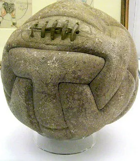

A historia do futebol
Origem do futebol
Não se sabe com precisão a data em que o futebol surgiu. Historiadores contam que os ingleses adquiriram o hábito de chutar uma bola de couro, símbolo da cabeça de um membro do exército da Dinamarca, como forma de comemorar a expulsão dos dinamarqueses de seu país ainda no século X. A ação era realizada anualmente, mas, com o tempo, a prática passou a popularizar-se, e os jogos com a bola passaram a ser realizados com maior frequência.
Os jogos não tinham regras estabelecidas, e era permitido diversos tipos de agressões para avançar ou conter o adversário, o que acabava ferindo muitos dos praticantes. Com as consequências, o Rei Eduardo II decidiu proibir os jogos, temendo a perda dos soldados do seu exército. A prática foi proibida, mas não cessada e, apenas em 1681, os jogos com a bola voltaram a ser permitidos na Inglaterra.
Regras do jogo:
As primeiras regras escritas do futebol surgiram em 1830 — The Football Rulles — e foram criadas pelo Colégio Harrow. Estabeleceram o número de 11 jogadores para cada equipe e os gols para onde a bola deveria ser conduzida. Como havia uma diversidade nas regras, que variavam para cada colégio, em 1848, houve uma reunião de diretores de várias escolas que estabeleceram um código comum para o futebol, o que ampliou a aceitação da atividade nos meios educacionais e nas classes mais altas. Ao longo das décadas, novas regras foram implementadas e muitas outras modificadas até o futebol chegar ao formato que é conhecido hoje. Entre as mudanças, muitas colaboram para que o jogo ficasse mais limpo e justo. Entre as principais regras inseridas, uma das ferramentas fundamentais para a disciplina foram os cartões amarelos e vermelhos. Eles foram inseridos em 1970, para a Copa do México, como uma forma de facilitar a comunicação entre os países que não falavam o mesmo idioma. Além disso, as regras do futebol têm alterações constantes pelos órgãos reguladores, como mudanças nas dimensões de campo, substituições de jogadores e muitas outras.
Crescimento do futebol como esporte:
O crescimento dos desafios e torneios entre clubes foi impulsionador para a institucionalização do futebol, que ocorreu em 1863. A partir da fundação da Football Association (FA), instituição que formulou as primeiras regras para a prática do futebol, o esporte passou a ter mais visibilidade e a elaboração de campeonatos e partidas oficiais iniciou-se. A criação dos campeonatos foi importante para o surgimento de regras universais para o futebol, e, desde então, o esporte começou a expandir-se, universalmente. Ao longo da década de 1870, o futebol começou a ser praticado pela classe trabalhadora inglesa, estimulada pelos donos de fábricas, pela necessidade de jogadores para se formar equipes. Nesse momento, o futebol deixou de ser privilégio da classe endinheirada e passou a ser difundido pelos centros urbanos e pelos diversos segmentos da sociedade britânica, contribuindo para um espaço de convivência entre burgueses e operários.